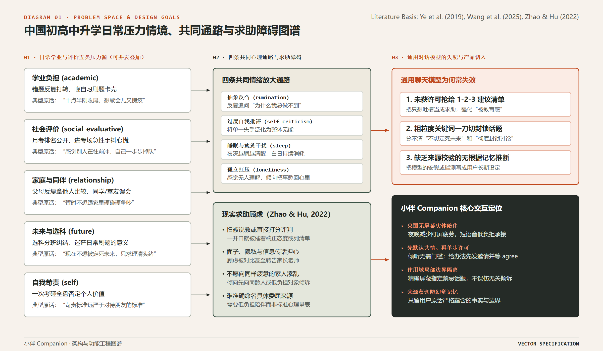

ZHONGKAO & GAOKAO DAILY COMPANIONSHIP · ARCHITECTURE & CAPABILITIES
听得懂考前慌乱、也守得住边界的桌面陪伴伙伴
面向承受中考与高考日常学业压力的中国初高中学生：共情倾听默认在场，任何微策略或短练习必须经过一次情境化单步同意才进入；拒绝不讲道理，疲惫时不布置任务，记忆只留经原文蕴含核对的真实表达与边界。

DETERMINISTIC AGENCY · INTERACTION SIMULATOR
四个高中日常情境的权限与状态裁决
切换下方升学压力场景与学生回应分支，观察确定性 StateMachine 如何守住“同意、拒绝、安静、局部边界隔离”，不让生成模型替学生拿主意。
THREE DECOUPLED LANES · CAS AUTHORITY
三线解耦架构与实时信号流
实时表达线仅消费当前已提交策略帧，从不阻塞等待后台分析；所有后台协作候选必须经 4 重版本号 CAS 与增量复核才能进入后续对话。
-

GROUNDED MEMORY & INTERACTION ETHICS
记住学生说过的偏好，但绝不脑补没说过的心事
记忆候选取自真实用户转写与同意事件后，交由跨家族模型以原话为前提逐句判定 entailed；凡是未经原文严格支持的性格标签或默认称呼，落库前一律过滤。
通过负向瞻前断言区分“不想定死未来”与“别替我选科”；借助 identity_name、parent_family、exam_grade 等八组概念簇实现重连称呼召回与局部禁忌隔离。
遇到“只要你陪我一个人”等独占期望时温和坦诚自己只是 AI 玩偶，在学生主动愿意时协助梳理现实中相对放心的师友支持入口。
STRATEGY & EXERCISE PROTOCOLS · GIT HEAD SYNCED
九张支持策略卡与三段固定短练习
按压力类别筛选浏览全套内容条目；右侧协议面板直接读取配置内的心理学机制、情境化邀请、停止边界与学术文献出处。
PRECISION ARCHITECTURE & FEATURE GALLERY
十一套工程与功能高清矢量图谱
采用统一的 Warm Daylight × TE 精密图纸风绘制，完整覆盖压力情境、文献转译、策略分层、单卡解剖、许可状态机、三线总图、多 Agent 协作、CAS 并发、蕴含记忆、流式音频与场景走查。每张均提供 2x PNG 与无损矢量 SVG 下载。

LOCAL WORKSPACE & FULL SPECIFICATION
本地运行入口与完整系统设计说明书
Python 3.10 模块化单体搭配只读双栏运行观测台与小智 ESP32 WebSocket 协议适配器，支持本地合成剧本体验与实机协议对接。
# 1. 初始化本地 Python 3.10 .venv 运行环境 ./scripts/setup.ps1 # 2. 体验离线合成对话剧本与本地 WAL 只读运行观测台 ./scripts/run.ps1 fake --db data/development.db ./scripts/run.ps1 dashboard --db data/development.db # 3. 配置 .env 模型密钥后启动真实模型会话、固定音频构建与设备接入 ./scripts/run.ps1 live --db data/development.db .venv/Scripts/python.exe -m companion.tools.prepare_audio --env-file .env --config-dir data/xiaozhi-config --output data/fixed_audio --bind-config
COMPLETE DESIGN MONOGRAPH
阅读完整研究与系统架构说明书
包含五类压力与四条通路、全部 19 项文献转译链路、L1 四态与 9 张策略卡逐张详解、三线解耦与 CAS 并发控制机制、Grounded Memory 架构、实时 Opus 流管线以及三幕交互走查。